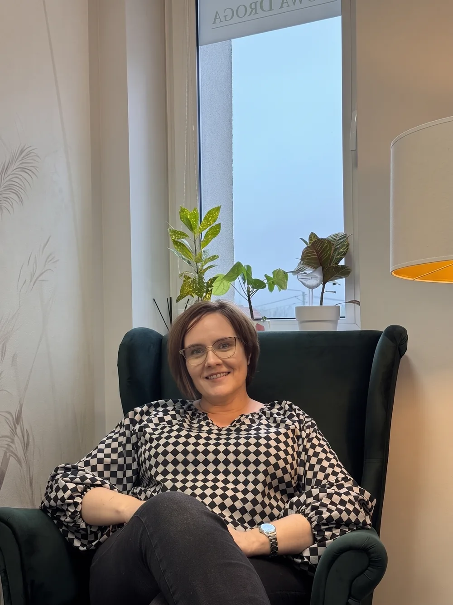
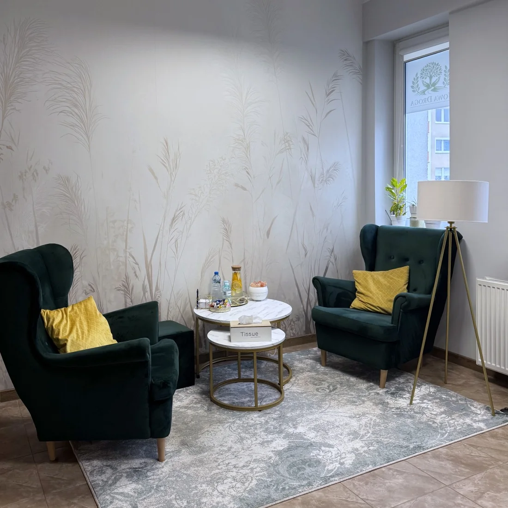
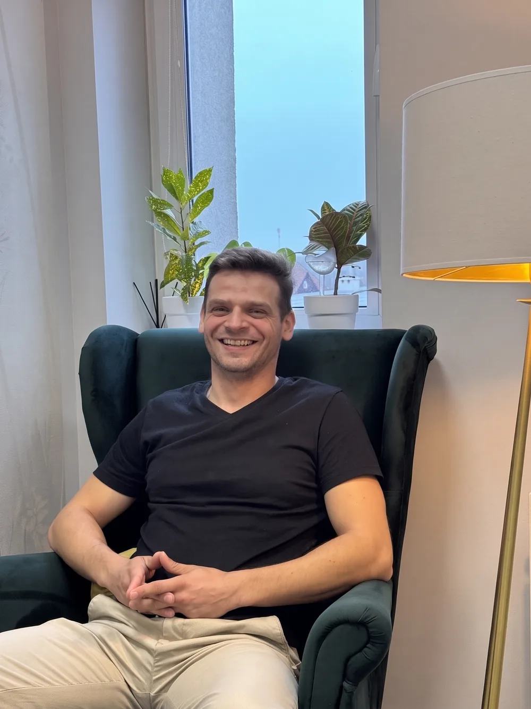
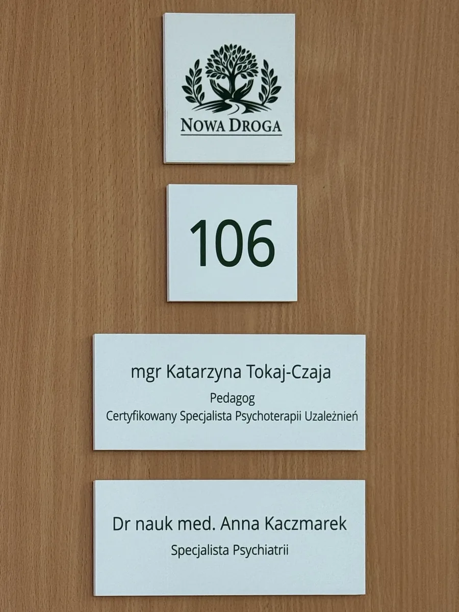

mgr Katarzyna Tokaj-Czaja
Pedagog, Certyfikowany Specjalista Psychoterapii Uzależnień
Poradnia terapii uzależnień i współuzależnienia w Barlinku.

Spokojna rozmowa w gabinecie, tylko we dwoje.
Jeśli nie możesz przyjść, spotkamy się przez internet.
Pomoc dla osób współuzależnionych i bliskich.

Pedagog, Certyfikowany Specjalista Psychoterapii Uzależnień

Pedagog, Certyfikowany Specjalista Psychoterapii Uzależnień
Specjalista Psychiatrii
Najlepiej osobiście. To najprostszy sposób, a skierowanie nie jest potrzebne.
Jeśli się nie da, zadzwoń pod +48 727 449 774 albo napisz na poradnianowadroga@gmail.com.
Termin pierwszej wizyty uzależniony jest od liczby osób oczekujących na przyjęcie do poradni. Informację o przewidywanym czasie oczekiwania można uzyskać podczas rejestracji.
Nie, skierowanie nie jest potrzebne.
Wizyty są refundowane przez NFZ.
Najlepiej przyjść osobiście do poradni, a jeśli się nie da, zadzwonić albo napisać maila. Termin pierwszej wizyty zależy od liczby osób oczekujących, a informację o czasie oczekiwania uzyskasz podczas rejestracji.
Tak, oczywiście. Pomagamy także bliskim osób uzależnionych.
Tak. To, co jest mówione w gabinecie, zostaje w gabinecie.
Tego nie da się z góry określić. Zależy od pacjenta, jego zaangażowania i problemów, z którymi przychodzi.
Zadzwoń albo napisz
+48 727 449 774Godziny przyjęć

I piętro, Centrum Medyczne. Szukaj drzwi 106 i 107.